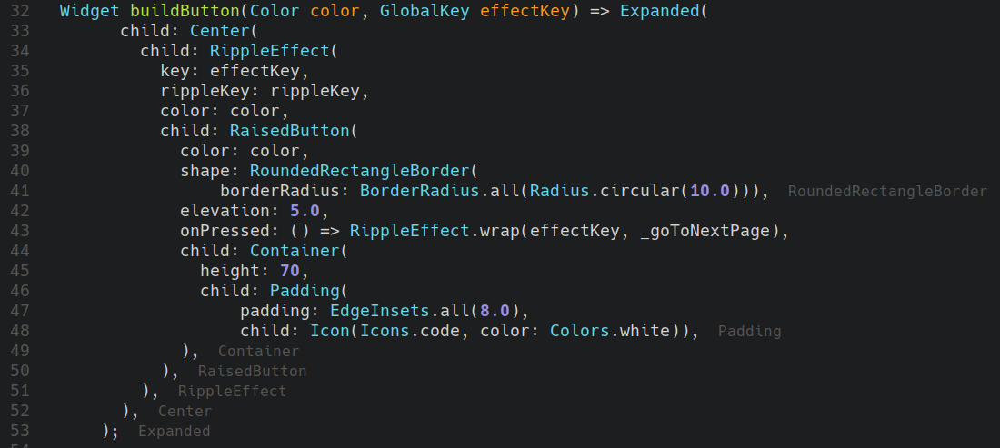
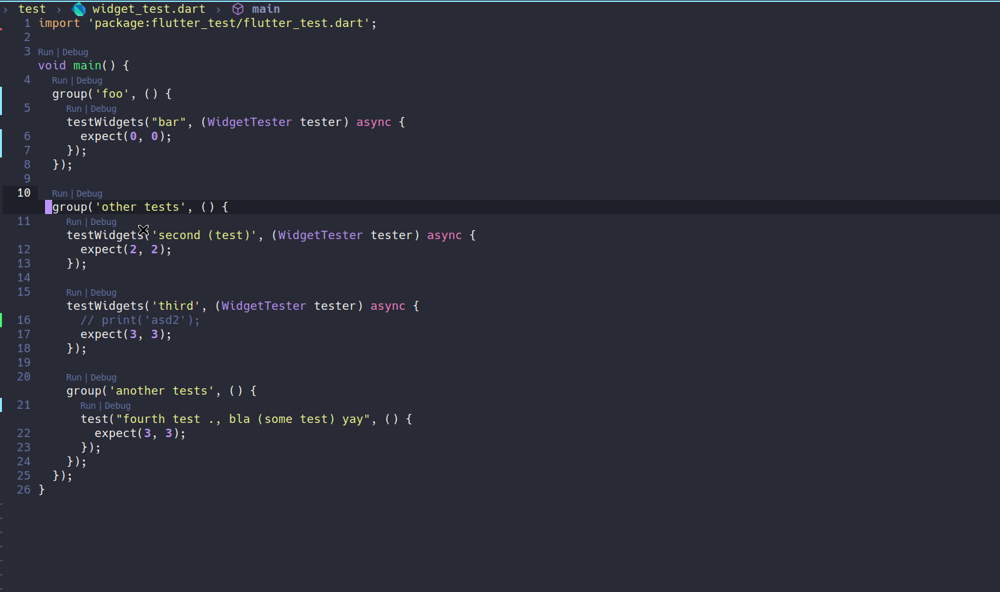
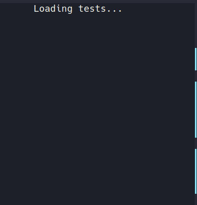
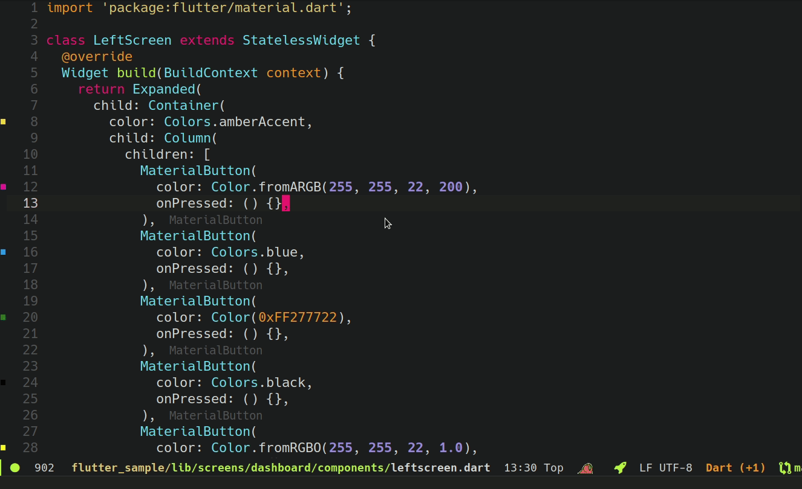
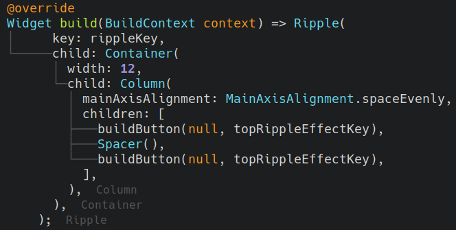
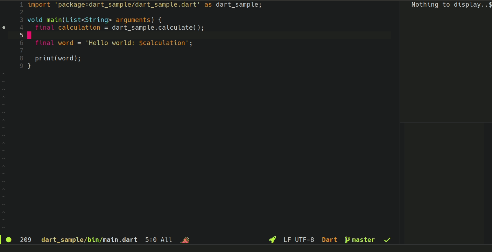

lsp-dart#


Emacs Dart IDE using lsp-mode to connect to Dart Analysis Server.
 LSP works great with Flutter, but there are also other packages that may help to improve your development, for more info see Additional packages.
LSP works great with Flutter, but there are also other packages that may help to improve your development, for more info see Additional packages.
Quickstart#
The following has a example to setup lsp-dart.
(require 'package)
(add-to-list 'package-archives '("melpa" . "http://melpa.org/packages/") t)
(package-initialize)
(setq package-selected-packages
'(dart-mode lsp-mode lsp-dart lsp-treemacs flycheck company
;; Optional packages
lsp-ui company hover))
(when (cl-find-if-not #'package-installed-p package-selected-packages)
(package-refresh-contents)
(mapc #'package-install package-selected-packages))
(add-hook 'dart-mode-hook 'lsp)
(setq gc-cons-threshold (* 100 1024 1024)
read-process-output-max (* 1024 1024))
Features#
Besides the lsp-mode features, lsp-dart implements the custom methods features from the dart_analysis_server.
Closing labels#

Tree views#
lsp-dart uses lsp-treemacs for rendering some tree views features.
lsp-dart-show-outline  *
*

lsp-dart-show-flutter-outline *

Run/Debug tests#
lsp-dart-run-all-tests - Run all tests from project.
lsp-dart-run-test-file - Run all tests from current test buffer.
lsp-dart-run-test-at-point - Run single test at point.
lsp-dart-debug-test-at-point - Debug single test at point.
lsp-dart-visit-last-test - Go to last ran test.
lsp-dart-run-last-test - Run last ran test.
lsp-dart-debug-last-test - Debug last ran test.
Running a test interactively:

Test tree#
lsp-dart-test-show-tree - Open the test tree containing the latest ran tests.

For more options, check the settings section.
Flutter colors#
Display the flutter colors on left fringe.

You can disable the feature setting lsp-dart-flutter-fringe-colors to nil.
Flutter widget guides#
Display widget guide lines from parent to child widgets on flutter. *

You can disable the feature setting lsp-dart-flutter-widget-guides to nil.
Run or Debug#
To run your app you can use lsp-dart-run which will use dap-mode but for running without debug. to pass custom arguments it's possible to pass a prefix-argument with arguments separated by space.
For debugging, lsp-dart uses dap-mode.
You only need to run lsp-dart-dap-setup one time to setup the debugger to your Emacs and dap-debug to start the debug.

Flutter#
lsp-dart support Flutter debugging too via dap-debug with an option to select the device to debug.

After the debug session has started, you can run:
lsp-dart-flutter-hot-restart - Trigger Flutter hot restart on the debug sessions.
lsp-dart-flutter-hot-reload - Trigger Flutter hot reload on the debug sessions.
For hot-reload/restart on buffer save you can enable lsp-dart-dap-flutter-hot-reload-on-save or lsp-dart-dap-flutter-hot-restart-on-save.
Custom templates#
You can register a custom template for debugging with dap-register-debug-template, check the following example:
(use-package lsp-dart
:ensure t
:hook (dart-mode . lsp)
:init
(dap-register-debug-template "Flutter :: Custom debug"
(list :flutterPlatform "x86_64"
:program "lib/main_debug.dart"
:args '("--flavor" "customer_a"))))
flutterPlatform,:program, and :args are all optional.
A full list of supported parameters can be found in the source of
the function lsp-dart-dap--populate-flutter-start-file-args in
lsp-dart-dap.el. Several of these parameters can be configured by
setting one of the Supported settings with
matching names.
DevTools#
You can also open the Dart DevTools on the current debug session with lsp-dart-open-devtools.
Commands#
lsp-dart supports running Flutter and Dart commands as following:
lsp-dart-pub-get - Run pub get or flutter pub get on project root.
lsp-dart-pub-upgrade - Run pub upgrade or flutter pub upgrade on project root.
lsp-dart-pub-outdated - Run pub outdated or flutter pub outdated on project root.
* Features only available for Dart SDK version 2.8.0 or above.#
Supported settings#
| Variable | Description | Default |
|---|---|---|
lsp-dart-sdk-dir |
The optional Dart SDK path. If nil and in a flutter project, it will try to find the dart SDK from Flutter SDK cache dir, otherwise it will search for a dart executable in $PATH. |
nil |
lsp-dart-flutter-sdk-dir |
The optional Flutter SDK path. If nil, it will try to find the Flutter SDK from the flutter executable in $PATH and if not found, it will try in $FLUTTER_ROOT. |
nil |
lsp-dart-flutter-executable |
Flutter executable name. | flutter |
lsp-dart-server-command |
analysis_server executable to use |
Check source file |
lsp-dart-enable-sdk-formatter |
Whether to enable server formatting. | t |
lsp-dart-line-length |
Line length used by server formatter. | 80 |
lsp-dart-show-todos |
Whether to generate diagnostics for TODO comments. If unspecified, diagnostics will not be generated. | nil |
lsp-dart-complete-function-calls |
Completes functions/methods with their required parameters. | t |
lsp-dart-extra-library-directories |
Extra libs to analyze besides Dart SDK libs | '() |
lsp-dart-only-analyze-projects-with-open-files |
Analysis will only be performed for projects that have open files rather than the root workspace folder | nil |
lsp-dart-suggest-from-unimported-libraries |
Completion will not include symbols that are not already imported into the current file. | t |
lsp-dart-closing-labels |
Enable the closing labels feature on server lsp | t |
lsp-dart-closing-labels-prefix |
The prefix string to be concatenated with the closing label | "" |
lsp-dart-closing-labels-size |
The font size factor to be multiplied by the closing labels font size | 0.9 |
lsp-dart-outline |
Enable the outline tree view feature on server lsp | t |
lsp-dart-outline-position-params |
The outline tree position params. | Left side |
lsp-dart-flutter-outline |
Whether to enable the Flutter outline tree view feature on server lsp | t |
lsp-dart-flutter-outline-position-params |
The Flutter outline tree position params | Left side |
lsp-dart-flutter-fringe-colors |
Enable the Flutter colors on fringe. | t |
lsp-dart-flutter-widget-guides |
Enable the Flutter widget guide lines from parent to child widgets | t |
lsp-dart-test-pop-to-buffer-on-run |
Whether to pop to tests buffer on run, only display or do nothing. | display-only |
lsp-dart-test-tree-on-run |
Whether to pop to tests tree buffer on run | t |
lsp-dart-test-tree-position-params |
The test tree position params | Treemacs default |
lsp-dart-test-tree-line-spacing |
The test tree line spacing between nodes | 4 |
lsp-dart-test-tree-line-spacing |
The test tree line spacing between nodes | 4 |
lsp-dart-main-code-lens |
Enable the Run\|Debug code lens on main methods. |
t |
lsp-dart-test-code-lens |
Enable the Run\|Debug code lens on tests. |
t |
lsp-dart-dap-extension-version |
The debugger extension version. | 3.10.1 |
lsp-dart-dap-use-sdk-debugger |
Whether to use the debugger built-in on dart-sdk and not the node extension.version. | t |
lsp-dart-dap-debugger-path |
The debugger extension path | Check source file |
lsp-dart-dap-dart-debugger-program |
The command to execute the debugger extension on dart projects. | Check source file |
lsp-dart-dap-dart-test-debugger-program |
The command to execute the test debugger extension on dart projects. | Check source file |
lsp-dart-dap-flutter-debugger-program |
The command to execute the debugger extension on flutter projects. | Check source file |
lsp-dart-dap-flutter-test-debugger-program |
The command to execute the test debugger extension on flutter projects. | Check source file |
lsp-dart-dap-debug-external-libraries |
Whether to enable the debug on external libraries | nil |
lsp-dart-dap-debug-sdk-libraries |
Whether to enable the debug on Dart SDK libraries | nil |
lsp-dart-dap-vm-additional-args |
Additional args for dart debugging VM when the debugging. | "" |
lsp-dart-dap-flutter-track-widget-creation |
Whether to pass –track-widget-creation to Flutter apps. Required to support 'Inspect Widget'. | t |
lsp-dart-dap-flutter-structured-errors |
Whether to use Flutter’s structured error support for improve error display. | t |
lsp-dart-dap-flutter-hot-reload-on-save |
When enabled, every buffer save triggers a lsp-dart-dap-flutter-hot-reload |
nil |
lsp-dart-dap-flutter-hot-restart-on-save |
When enabled, every buffer save triggers a lsp-dart-dap-flutter-hot-restart |
nil |
lsp-dart-devtools-theme |
The devtools theme when openning via lsp-dart-dap-open-devtools |
"dark" |
lsp-dart-devtools-hide-options |
What to hide when openning DevTools via lsp-dart-dap-open-devtools |
debugger |
Additional packages#
- lsp-ui : Flycheck, documentation and code actions support.
- lsp-treemacs :
lsp-modeGUI controls implemented using treemacs. - company-capf : Completion back-end support.
- hover.el : Tool to run flutter mobile apps from desktop without the need of an emulator.
FAQ#
 Emacs can't find my package, it keeps searching up until the dart root package folder.
Emacs can't find my package, it keeps searching up until the dart root package folder.
 Configure projectile to find the package pubspec.yaml and set the folder as project root:
Configure projectile to find the package pubspec.yaml and set the folder as project root:
(with-eval-after-load 'projectile
(add-to-list 'projectile-project-root-files-bottom-up "pubspec.yaml")
(add-to-list 'projectile-project-root-files-bottom-up "BUILD"))
LSP :: No LSP server for dart-mode(check *lsp-log*).
Try to set the lsp-dart-sdk-dir to the Dart SDK dir installation or if you are using Flutter, <your-flutter-dir>/bin/cache/dart-sdk/.
Community#
All feedback and suggestions are very welcome!
You can open a issue or for a quick answer, send a message on Gitter.